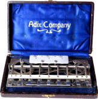

Rechenmaschinen hielten ihren Einzug in die Bürowelt. Die erste Firma, die Aluminium für ihre Rechner verwendete, war die "Adix Company". Sie nannte dieses Modell bereits "Taschenrechner". Das Gestänge der Maschine besteht aus Aluminium, um das Gewicht gering zu halten.